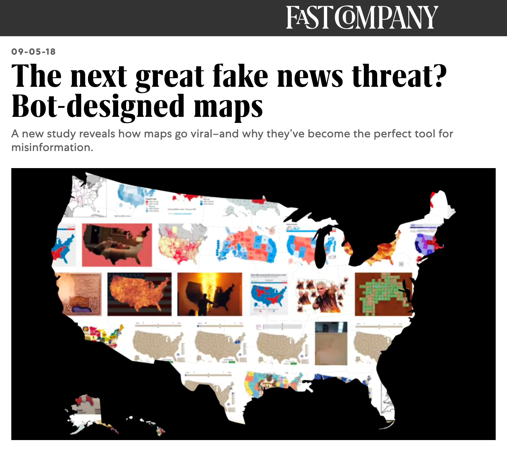
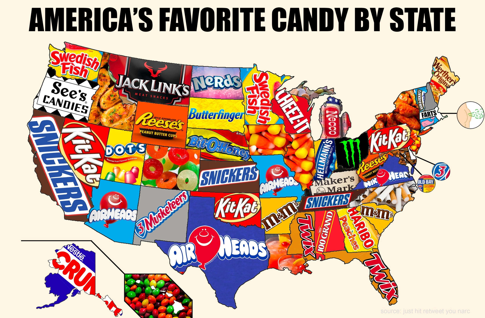
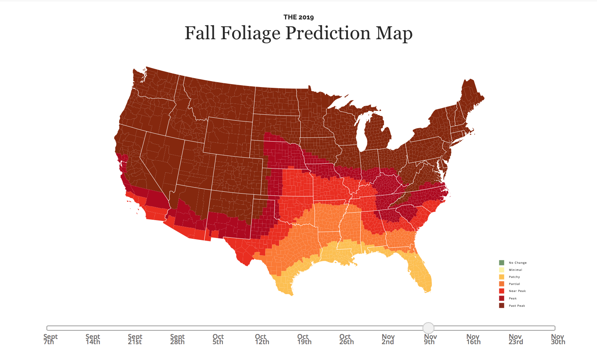
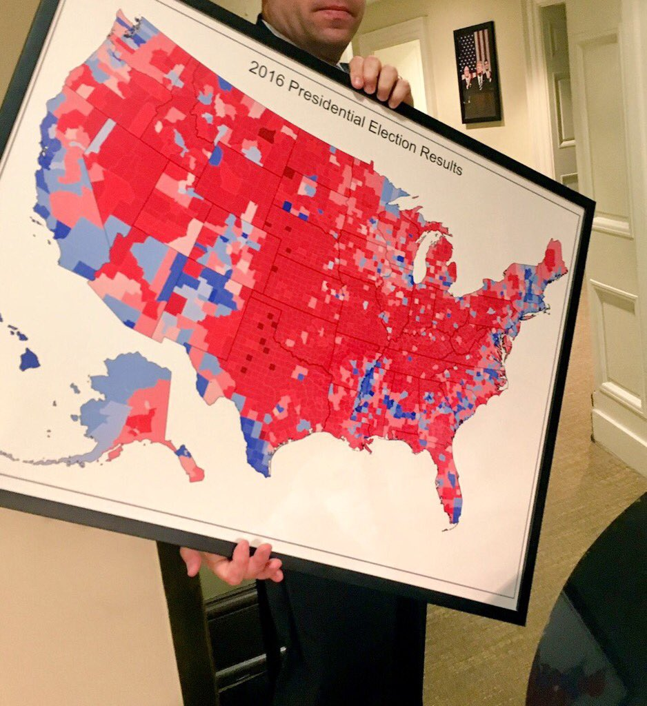
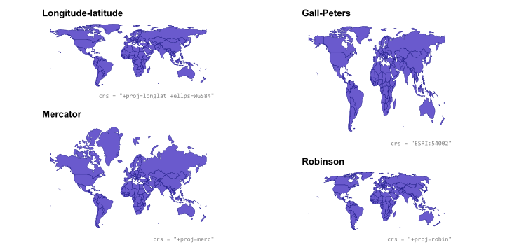
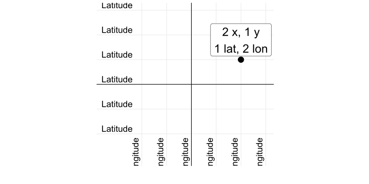

data/ne_110m_admin_0_countries
├── ne_110m_admin_0_countries.cpg
├── ne_110m_admin_0_countries.dbf
├── ne_110m_admin_0_countries.prj
├── ne_110m_admin_0_countries.README.html
├── ne_110m_admin_0_countries.shp
├── ne_110m_admin_0_countries.shx
└── ne_110m_admin_0_countries.VERSION.txtSpatial analysis in R
STAT150 | R for Data Science
Ihor Miroshnychenko
Kyiv School of Economics
Maps
John Snow and 1854 cholera epidemic
- 10% of the population of Soho died in a week (!!)
- Miasma theory said it was because the air was bad
The Broad Street pump

Outright lies


Fake maps and junk maps


Points can be useless

Choropleths can be great
Choropleths can distort
Land doesn’t vote
Cartograms


World projections
UA projections

Which projection is best?
- None of them
- There are no good or bad projections
- There are appropriate and inappropriate projections
- It depends on the purpose of the map
Putting data on maps
Maps with lines


Maps with points

Voronoi maps
Small multiples that look like maps

GIS in R with sf
Shapefiles
- Geographic information is shared as shapefiles
- These are not like regular single CSV files!
- Shapefiles come as zipped files with a bunch of different files inside
Structure of a shapefile
library(sf)
world_shapes <- read_sf("data/ne_110m_admin_0_countries/ne_110m_admin_0_countries.shp")
world_shapes |>
select(TYPE, GEOUNIT, ISO_A3, geometry) |>
head(7)Simple feature collection with 7 features and 3 fields
Geometry type: MULTIPOLYGON
Dimension: XY
Bounding box: xmin: -180 ymin: -18.28799 xmax: 180 ymax: 83.23324
Geodetic CRS: WGS 84
# A tibble: 7 × 4
TYPE GEOUNIT ISO_A3 geometry
<chr> <chr> <chr> <MULTIPOLYGON [°]>
1 Sovereign country Fiji FJI (((180 -16.06713, 180 -16.5…
2 Sovereign country Tanzania TZA (((33.90371 -0.95, 34.07262…
3 Indeterminate Western Sahara ESH (((-8.66559 27.65643, -8.66…
4 Sovereign country Canada CAN (((-122.84 49, -122.9742 49…
5 Country United States of America USA (((-122.84 49, -120 49, -11…
6 Sovereign country Kazakhstan KAZ (((87.35997 49.21498, 86.59…
7 Sovereign country Uzbekistan UZB (((55.96819 41.30864, 55.92…Where to find shapefiles
- Natural Earth for international maps
- US Census Bureau for US maps (need VPN 🙃)
- GADM for country-level maps
- Eurostat GISCO for European maps
- Google “shapefile [country/region name]”
Scales

1:10m = 1:10,000,000
1 cm = 100 km

1:50m = 1:50,000,000
1 cm = 500 km

1:110m = 1:110,000,000
1 cm = 1,100 km
Using too high of a resolution makes your maps slow and huge
Latitude and longitude
The magic geometry column
As long as you have a magic geometry column, all you need to do to plot maps is geom_sf()
The magic geometry column
- Use
coord_sf()to change projections
The magic geometry column
- Use
coord_sf()to change projections
Use aesthetics like normal
All regular ggplot layers and aesthetics work
No geometry column?
Make your own with st_as_sf()
Simple feature collection with 3 features and 1 field
Geometry type: POINT
Dimension: XY
Bounding box: xmin: 24.0316 ymin: 46.4825 xmax: 30.7326 ymax: 50.4501
Geodetic CRS: WGS 84
# A tibble: 3 × 2
country geometry
* <chr> <POINT [°]>
1 Kyiv (30.5234 50.4501)
2 Lviv (24.0316 49.8397)
3 Odesa (30.7326 46.4825)sf is for all GIS stuff
- Draw maps
- Calculate distances between points
- Count observations in a given area
- Anything else related to geography!
geom_sf() is today’s standard
- You’ll sometimes find older tutorials and StackOverflow/LLM’s answers about using
geom_map()orggmap()or other things - Those still work, but they don’t use the same magical
sfsystem with easy-to-convert projections and other GIS stuff
sf and geom_sf() and your life will be easy
Questions?